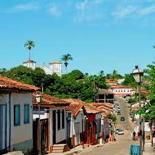

Goiás, estado localizado na região Centro-Oeste do Brasil, possui uma diversidade de pontos turísticos, incluindo cidades históricas, parques naturais e rica cultura popular. Aqui estão alguns dos principais pontos turísticos de Goiás:
Bem-vindo ao Goiás

Goiânia: A capital de Goiás, Goiânia, possui atrações como o Parque Flamboyant, um belo parque urbano com lagos e trilhas para caminhada; o Bosque dos Buritis, um espaço arborizado com jardins e um lago; e o Mercado Municipal, onde você pode encontrar produtos regionais e artesanato local.

Goiás Velho: Também conhecida como Goiás City, é uma cidade histórica e Patrimônio Mundial da UNESCO. Destacam-se o Centro Histórico com suas igrejas coloniais e casarões, o Museu das Bandeiras, o Lago das Rosas e a Igreja de Nossa Senhora do Rosário.

Chapada dos Veadeiros: Localizada no município de Alto Paraíso de Goiás, a Chapada dos Veadeiros é uma área de preservação ambiental conhecida por sua beleza natural. Possui cachoeiras impressionantes, como a Cachoeira Santa Bárbara e o Vale da Lua, além de trilhas e formações rochosas únicas

Pirenópolis: Uma charmosa cidade histórica com ruas de pedra, igrejas antigas e casarões coloniais. Destacam-se a Igreja Matriz de Nossa Senhora do Rosário, a Cachoeira dos Dragões e o Parque Estadual dos Pireneus, que oferece trilhas e vistas panorâmicas.